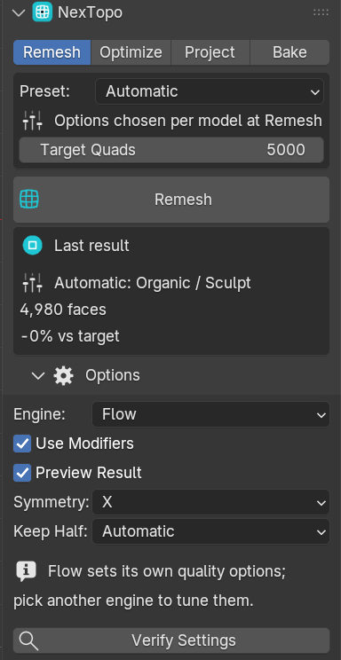
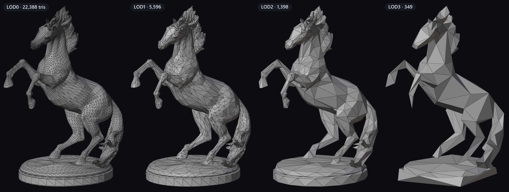
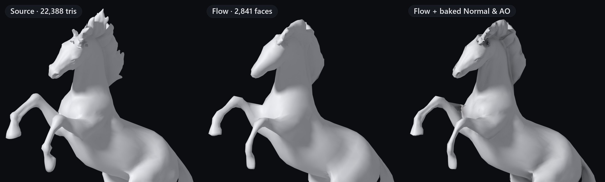

▶Quick start
Install
- Download
nextopo-1.0.0-windows-x64.zip(ornextopo-free-1.0.0-windows-x64.zip). Don't unzip it. - In Blender go to Edit → Preferences → Get Extensions, open the ▾ menu at the top right and choose Install from Disk…
- Pick the zip. The engine is inside it: nothing else to install, no path to set.
The first time the engine runs, Windows SmartScreen may warn that the program is new and unsigned. Choose More info → Run anyway, once.
First remesh
- Select a mesh in Object Mode.
- Press N in the 3D Viewport and open the NexTopo tab.
- Set Target Quads to roughly the density you want and click Remesh.
- The result arrives as a preview. Click Accept to keep it or Discard to throw it away.

⚡Remesh: the one-click Flow engine
Flow, the default engine, lays quads along the shape of the surface at an even density. It chooses its own settings, so there is nothing to tune: set roughly how many quads you want and press Remesh. Dirty input is repaired first: non-manifold edges, flipped normals, near-duplicate vertices and small cracks.
How to use
- Select the mesh and set Target Quads.
- Press Remesh and look at the preview.
- Change the count and press Remesh Again, or Accept.
Options
| Target Quads | Roughly how many faces you want. Flow retries toward it on its own. |
|---|---|
| Engine | Flow (default), or QuadriFlow / Feature-line for manual control (see Advanced). |
| Symmetry | Remesh about a local axis for an exactly mirrored result. |
| Preview Result | On by default. Off applies the result directly. |
| Use Modifiers | Remesh the mesh with its modifier stack applied. |
⇋Symmetry
Pick an axis and the result is an exact mirror: one straight loop runs down the mirror line and the two halves weld into one mesh. If that seam does not weld cleanly, NexTopo runs again without the guide loop and tells you so.
⧉Multi-part models, part by part
A prop is rarely one closed surface. Every separate piece gets its own remesh and its own share of the quad budget, so small parts such as buttons and straps come out as quads instead of being swallowed. Identical copies, such as a pair of eyes, get identical topology. On mechanical parts each piece may switch to the engine that keeps its edges best, but only when that result is sound.
The count is a target, not a guarantee. On models with many small parts Flow may spend more quads than asked so those parts stay intact.
◎Project: fit one mesh onto another
Move the vertices of a light mesh onto a detailed one: a retopology onto the sculpt it was made over, or a remesh onto its original. With Subdivisions it subdivides and projects one level at a time to pick up finer detail. A vertex only goes to a surface that faces its way, so two lips or two close fingers do not swap, and a move that would fold a face is shortened or taken back.
How to use
- Select the light mesh and open the Project tab.
- Pick the detailed mesh as Source (it is never changed).
- Set Subdivisions (0 refits the mesh as a shape key) and press Project.
Options
| Max Distance | How far a vertex may travel; 0 picks 2 % of the source's size. |
|---|---|
| Pin Open Borders | Keeps the edge of a partial mesh fixed. |
| Influence | A vertex group: weight 0 stays, 1 moves fully. |
▤Optimize + LODs
Make a lighter triangle copy of any mesh to a ratio or a triangle count, or press Generate LODs for a whole chain: Name_LOD1, Name_LOD2… in their own collection, with buttons to show one level at a time. Materials, colours and vertex groups carry over, so the rig still applies. Blender's own Decimate does the reduction underneath.

◐Bake: the detail back onto the light mesh
Bake Base Color, Normal and AO from the detailed mesh onto the light one's UV map with Cycles, wired into a copy of its material. Models made of separate parts bake part by part: each face reads only the piece it lies on, so a ray never lands on a neighbouring part across a gap.

How to use
- Select the detailed mesh, then the light one last, so it is active. (A remesh result bakes from its original on its own.)
- Open the Bake tab, pick the maps and the size.
- Press Bake. The original and its materials are never changed.
Good to know
- Normal maps are tangent space, OpenGL (+Y), as Blender, Unity and glTF read them. In Unreal, flip the green channel.
- A mesh without UVs gets a Smart UV Project first.
- Baking needs Cycles and blocks Blender until it finishes.
✔Built not to get in your way
Runs outside Blender
The solver is a separate program. A mesh that defeats it returns an error instead of taking your unsaved scene down with it.
Repair first
Non-manifold edges, inconsistent normals, near-duplicate vertices and small cracks are repaired before the remesh, so real-world input works. Openings you modelled on purpose stay open.
Preview, then decide
The original stays hidden under the preview. Accept keeps the result as a new object; Discard brings the original back.
Your data carried over
Material slots, per-face material assignment and smooth/flat shading come across to the new mesh.
Repeatable
The same mesh with the same settings gives the same result every time on your machine, however many CPU cores it uses.
Fully offline
No account, no activation, no licence server. The add-on makes no network connections, and your meshes never leave your computer.
✎Advanced: more control
Switch Options → Engine to QuadriFlow or Feature-line and you get the full set of controls: presets (Organic, Hard-surface, Scan Cleanup, Game-ready), hard-edge preservation with an adjustable angle and match-target refinement. Flow sets these itself.
＋Free and full editions
Two downloads, no licence key, no activation, no expiry. NexTopo Free is the same add-on and the same engine with two limits. At or below 5,000 quads both produce byte-for-byte the same result.
| Free | Full | |
|---|---|---|
| Remesh output | up to 5,000 quads | unlimited |
| Project target | up to 10,000 vertices | unlimited |
| Optimize + LODs, Bake | ✓ | ✓ |
| Repair, preview, symmetry, materials | ✓ | ✓ |
| Commercial use of your results | ✓ | ✓ |
Installing the full zip replaces the free one in place; your preferences are kept.
?FAQ
How is this different from Blender's built-in QuadriFlow remesh?
The built-in remesher refuses a lot of real geometry: non-manifold input, inconsistent normals, near-duplicate vertices. NexTopo repairs the mesh first, remeshes each separate part on its own budget, previews the result before replacing anything and carries materials and shading across. Project, LODs and Bake then take the result the rest of the way to a game-ready asset.
Is it all quads?
Almost: 98.5 to 100 % quads across our 13-model test set. The rest is a handful of other faces where the layout needs them.
Will my UVs survive?
Plan to re-unwrap or re-bake for production. Bake gives the light mesh its own maps, and makes UVs with Smart UV Project when it has none. Materials and shading are carried over.
Does it need an internet connection?
No: not to install, not to activate, not to run.
Is it a subscription?
No. One-time purchase, perpetual, and you may use the results in commercial work.
macOS or Linux?
Not in this release. Windows x64 only.
It's slow on a huge mesh.
Remesh time scales with the input size. Decimate a multi-million-triangle scan first (the Optimize tab does that), or be patient; progress is shown and Cancel stops it cleanly.
✓Compatibility
| Blender | 4.2 LTS through 5.2 LTS (developed and tested on 5.2) |
|---|---|
| Platform | Windows x64 only |
| Format | Blender Extension (.zip) with the engine bundled, installed from disk |
| Bake | Needs the Cycles render engine (built into Blender) |
| Internet | Not required. No data is collected; the add-on only writes temporary mesh files for the engine. |
| License | Add-on: GPL-3.0-or-later. Engine: proprietary, with every third-party licence included in the package. |
◇About
NexTopo is made by Dawid Gerula, a 3D artist and QA analyst building precise, production-grade tools for 3D artists. Questions, or a mesh that defeats it? Send it over: dawidgerulapl@gmail.com.
Models on this page: Suzanne (Blender), Crowbar 01, Gamepad and Horse Statue 01 (Poly Haven, CC0), Inferno Kaen katana (the author's own), a CAD bracket made for testing.